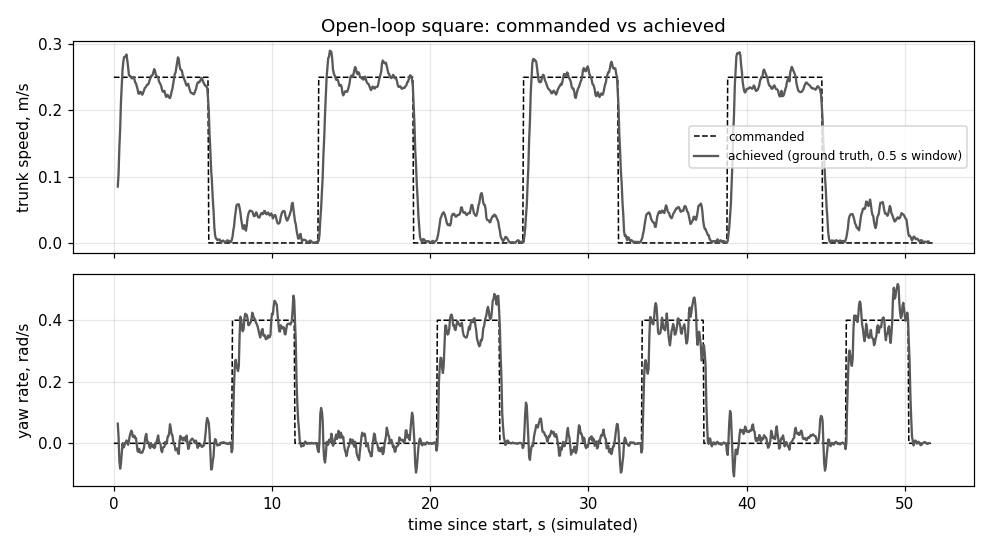

Move it · Project 3
Move in shapes: open loop vs closed loop
Goal
Make the Go2 walk a 1.5 m square and a figure-eight in two ways. Open loop: send timed velocity commands and hope the robot
does what it was told. Closed loop: read the pose on /odom and keep turning until the heading is right, keep walking until
the distance is covered. You score both against the simulator's ground truth, find out where the open-loop error comes from
(the robot does not reach the speed you command), and see how much of the closed-loop error is left over from the pose
estimate itself.
What you will learn
- Writing an open-loop motion as a schedule of
(duration, v, w)segments, timed on simulated time. - Writing a closed-loop motion as a small state machine (turn, walk, settle) driven by
/odom. - Steering onto a line with a lookahead point ("carrot") instead of aiming at the goal point.
- Measuring commanded vs achieved speed from
/odom_gt, and predicting the open-loop error from it. - Separating controller error from estimation error by closing the loop on ground truth.
- Keeping the pure logic out of the ROS node so it can be unit-tested.
Before you start
You need project 1: starting the stack, /cmd_vel, the rule that CHAMP keeps walking on the
last command, and reading a pose and heading from nav_msgs/Odometry.
Every terminal starts with:
cd go2-nav-sim
source env.sh
Start the stack:
scripts/up.sh
# stack up
Run each shape right after scripts/up.sh. The restart puts the robot back on marker A facing +x and resets /odom, which
drifts while the robot stands (see If it goes wrong). Each shape starts from wherever the robot is, so
from A there is room: the square needs 1.5 m ahead and to the left, the figure-eight 0.9 m to each side. In my eight
closed-loop figure-eights from A, the trunk centre came no closer than 0.45 m to the inner face of the south wall, on the
lower lobe.
The scripts are plain Python files and need no build:
| File | What it does |
|---|---|
shapes.py |
the shapes, the open-loop schedules and the closed-loop Follower; no ROS in it |
drive.py |
the node: runs one shape in one mode, publishes /cmd_vel, logs /odom and /odom_gt to results/<shape>_<mode>.csv |
analyze.py |
scores the logs against ground truth, prints the tables, draws figures/*.png |
results/repeats/ |
more runs of the same shapes (<shape>_<mode>_N.csv), so you can see how much one run differs from the next |
record.py |
records a camera to MP4 (projects/common/record_cam.py with a reliable subscription) |
test_shapes.py |
unit tests for shapes.py |
Steps
1. Run the unit tests
python3 -m pytest -q projects/p03_move-in-shapes
# 6 passed
The tests drive the closed-loop Follower on a perfect simulated robot (it does exactly what it is commanded) and check that it
passes within 5 cm of every corner of the square and ends within 8 cm of the start of the figure-eight. If they fail, the
simulator runs will not be better.
Check: 6 passed.
2. Walk the square open loop
python3 projects/p03_move-in-shapes/drive.py square open
The script waits for /odom and /odom_gt, then plays this schedule four times: walk 0.25 m/s for 6.0 s (1.5 m), stand
1.5 s, turn 0.4 rad/s for 3.93 s (90 degrees), stand 1.5 s. My run:
[INFO] [...] [drive_shapes]: square open: start at odom (0.00, 0.01, -0.1 deg)
[INFO] [...] [drive_shapes]: finished after 51.8 s of simulated time
log: .../projects/p03_move-in-shapes/results/square_open.csv
The robot comes back close to A, but the square it walks is smaller than 1.5 m and not square. Open-loop runs differ a lot from one to the next, so do not expect your corner and heading errors to match mine to the centimetre; How much one run differs from the next gives the range over five runs.
Check: finished after 51.8 s (the schedule is 4 × (6.0 + 1.5 + 3.93 + 1.5) = 51.7 s, plus one tick).
3. Walk the square closed loop
Restart, then run the same shape with feedback:
scripts/up.sh
python3 projects/p03_move-in-shapes/drive.py square closed
[INFO] [...] [drive_shapes]: square closed: start at odom (0.01, 0.00, 0.1 deg)
[INFO] [...] [drive_shapes]: finished after 50.1 s of simulated time
Here nothing is timed. At each corner the robot turns until /odom says the heading points along the next side (within
2 degrees), walks until /odom says the side is done (within 2 cm), stands 1.5 s, and at the end turns back to its start heading.
Check: the robot stops at each corner, and the CSV labels go walk0, corner0, turn1, walk1, ...:
cut -d, -f2 projects/p03_move-in-shapes/results/square_closed.csv | uniq | tr '\n' ' '
# label walk0 corner0 turn1 walk1 corner1 turn2 walk2 corner2 turn3 walk3 corner3 final_turn stop
4. Walk the figure-eight open loop
scripts/up.sh
python3 projects/p03_move-in-shapes/drive.py figure8 open
# [INFO] [...] [drive_shapes]: finished after 33.0 s of simulated time
The figure-eight is two circles of radius r = 0.45 m that touch at the start: the left one counter-clockwise, then the right one clockwise. Open loop that is v = 0.18 m/s with w = v / r = +0.4 rad/s for 2πr / v = 15.7 s, then the same with w = -0.4 rad/s.
Check: about 33 s, and the robot ends near A but not on it.
5. Walk the figure-eight closed loop
scripts/up.sh
python3 projects/p03_move-in-shapes/drive.py figure8 closed
# [INFO] [...] [drive_shapes]: finished after 39.7 s of simulated time
Closed loop, the figure-eight is 24 points, one every 30 degrees on each circle. The robot walks from point to point at
0.18 m/s without stopping and only turns on the spot at the start (0.85 s of turn0).
There is no turn at the end: the robot stops on the last leg, heading 2 to 11 degrees left of where it started in my eight runs (Results explains why).
Check: about 40 s, and cut -d, -f2 projects/p03_move-in-shapes/results/figure8_closed.csv | uniq | tr '\n' ' ' shows
turn0 once, then walk0 to walk23, then stop.
6. Score the runs and draw them
python3 projects/p03_move-in-shapes/analyze.py
It writes figures/shapes.png and figures/commanded_vs_achieved.png and prints several tables. The first one scores your
four runs, one row each. With my logs it is:
| Run | Corner (square) or crossing (figure-eight) errors, m | The same on /odom, m | Final position error, m | Final heading error, deg | /odom end heading, deg | /odom displacement error at end, m | /odom yaw drift in run, deg | Time, s |
|---|---|---|---|---|---|---|---|---|
| square_open | 0.08 0.19 0.21 0.01 | 0.09 0.19 0.17 0.04 | 0.13 | -4.7 | -0.6 | 0.02 | 4.1 | 51.8 |
| square_closed | 0.01 0.01 0.05 0.02 | 0.02 0.01 0.04 0.03 | 0.12 | 1.1 | -1.5 | 0.05 | -2.6 | 50.1 |
| figure8_open | 0.06 | 0.06 | 0.17 | -0.8 | 1.5 | 0.03 | 2.2 | 33.0 |
| figure8_closed | 0.07 | 0.07 | 0.05 | 3.9 | 6.4 | 0.02 | 2.5 | 39.7 |
The table in Results is columns 1, 2, 4, 5 and 9 of this one. The other columns say what /odom saw:
- "The same on /odom": the corner errors measured in
/odomagainst a square placed at/odom's start pose. This is what the closed loop steers on. - "/odom end heading": the heading change from start to end as
/odomsaw it. - "/odom displacement error at end": how far
/odom's displacement since the start is from the true one. - "/odom yaw drift in run":
/odom's heading change minus the true heading change. The final heading error is the/odomend heading minus this drift (square, open loop: -0.6 - 4.1 = -4.7).
Below it come a table for the Try this runs 1 and 2 (square_open_calibrated, square_closed_on_odom_gt),
the repeat runs in results/repeats/, the spread over all runs of each kind, and the commanded vs achieved speeds. The repo
ships my logs for all of these, so you see the Try this table before you have made those runs yourself; your own runs replace
those two rows. All of it, for my logs, is in results/analyze_output.txt.
drive.py overwrites results/<shape>_<mode>.csv on every run. To keep a run as a repeat, copy it to
results/repeats/<shape>_<mode>_N.csv with an unused N, and analyze.py adds it to the repeat and spread tables.
Check: the first table has four rows, square_open, square_closed, figure8_open, figure8_closed; the next one,
headed Try this runs, has the two rows that come with the repo; and the two PNG files are written.
7. Record a video of a run
Restart the stack in the first terminal, so the robot starts on A:
scripts/up.sh
In a second terminal (cd go2-nav-sim and source env.sh as always), start the recorder:
python3 projects/p03_move-in-shapes/record.py /tmp/figure8.mp4 --topic /spectator/cam/image_raw
Back in the first terminal, run the shape:
python3 projects/p03_move-in-shapes/drive.py figure8 closed
When it prints finished after ..., stop the recorder with Ctrl-C in the second terminal. It may print a traceback; the
file is still complete (If it goes wrong).
The video is paced by simulated time at 10 frames per second, and it includes the seconds before and after the run. Count its frames and read its duration:
ffprobe -v error -count_frames -select_streams v:0 -show_entries stream=nb_read_frames:format=duration -of default=noprint_wrappers=1 /tmp/figure8.mp4
# nb_read_frames=493
# duration=49.300000
That was my run of 40.6 s with the recorder started 8 s before it and stopped 5 s after, so your numbers depend on how long you leave the recorder running.
I cropped the robot's corner of the arena and played it at twice the speed. The last argument is the output file; this writes
it to /tmp, not to the directory you are in:
ffmpeg -i /tmp/figure8.mp4 -vf "crop=480:270:20:190,scale=960:540,setpts=PTS/2" -r 20 -c:v libx264 -crf 26 -an /tmp/figure8_closed.mp4
ffprobe -v error -show_entries format=duration -of default=noprint_wrappers=1 /tmp/figure8_closed.mp4
# duration=24.650000
Check: duration is nb_read_frames divided by 10, and the cropped clip is half as long.
8. Stop everything
scripts/stop.sh
How the code works
Open loop: a schedule
shapes.py describes the open-loop square as a list of (duration, v, w, label) and looks up the command for the time since
the start:
def square_schedule(side=SIDE, v=0.25, w=0.4, settle=1.5, v_real=None, w_real=None):
T_side, T_turn = side / (v_real or v), math.pi / 2 / (w_real or w)
seg = []
for k in range(4):
seg += [(T_side, v, 0.0, f'side{k}'), (settle, 0.0, 0.0, f'corner{k}'),
(T_turn, 0.0, w, f'turn{k}'), (settle, 0.0, 0.0, f'turned{k}')]
return seg
def command_at(schedule, t):
for dur, v, w, label in schedule:
if t < dur:
return v, w, label
t -= dur
return None
The whole plan rests on two products: distance d = v · T and angle θ = w · T. If the robot walks at 0.231 m/s instead of 0.25,
6.0 s gives 1.39 m, not 1.5 m, and nothing in the program notices. v_real and w_real are for Try this 1.
The node: one timer on simulated time
drive.py runs everything from one 20 Hz timer. With use_sim_time the timer and get_clock() follow /clock, so a 6 s
segment lasts 6 s of simulated time even when Gazebo runs at 0.6 of real time:
def tick(self):
if self.done or self.odom is None or self.gt is None:
return
t = self.get_clock().now().nanoseconds * 1e-9
if self.t0 is None:
self.start(t)
cmd = (shapes.command_at(self.plan, t - self.t0) if self.mode == 'open' else self.plan.step(t, *self.odom))
if cmd is None:
cmd, self.done = (0.0, 0.0, 'stop'), True
v, w, label = cmd
tw = Twist(); tw.linear.x, tw.angular.z = float(v), float(w)
self.pub.publish(tw)
self.log.writerow([...])
The last command is always a zero (stop), and stop() publishes five more zeros on exit or Ctrl-C, because CHAMP keeps
walking on whatever it heard last. The ground truth is only logged, never used for control.
start() fixes the shape at the robot's pose when the run begins: the closed-loop points are rotated by the start heading a0
and shifted to the start position (x0, y0) in the odom frame, x' = x0 + x cos a0 - y sin a0, y' = y0 + x sin a0 + y cos a0.
Closed loop: turn, walk, settle
Follower.step(t, x, y, yaw) returns the next (v, w, label) from the measured pose. Each leg runs from the previous waypoint
P to the next one T. The geometry of a leg:
def leg(self, x, y, yaw):
(px, py), (tx, ty) = self.prev, self.pts[self.i]
L = math.hypot(tx - px, ty - py) or 1e-9
ux, uy = (tx - px) / L, (ty - py) / L
s = (x - px) * ux + (y - py) * uy # robot's projection onto the leg
cx, cy = px + (s + self.lookahead) * ux, py + (s + self.lookahead) * uy
return L - s, wrap(math.atan2(cy - y, cx - x) - yaw)
sis how far along the leg the robot is: the dot product of (robot - P) with the leg's unit vector u.L - sis the distance left. It goes negative if the robot overshoots, so the testleft < reach_tolalso catches a robot that passed beside the point.- The heading error is measured to a carrot 0.4 m further along the line than the robot. If the robot is to the side of the line, the carrot pulls it back; as it gets onto the line the carrot lies straight ahead. My first version aimed at T itself. That fails near T: a 3 cm sideways offset becomes a large bearing error when T is 10 cm away, and the robot swerved (If it goes wrong).
wrapkeeps the error in (-π, π], so the robot never turns 350 degrees one way instead of 10 degrees the other.
The state machine around it:
left, err = self.leg(x, y, yaw)
if self.mode == 'turn':
if abs(err) > self.turn_tol:
return 0.0, self._turn(err), f'turn{self.i}'
self.mode = 'walk'
if left < self.reach_tol: # reached (or passed) this waypoint
self.prev, self.i = self.pts[self.i], self.i + 1
if self.stop_each:
self.mode, self.t_mode = 'settle', t
elif self.i < len(self.pts) and abs(self.leg(x, y, yaw)[1]) > self.pass_tol:
self.mode = 'turn'
return self.step(t, x, y, yaw)
v = min(self.v, max(0.1, left)) if self.stop_each else self.v # slow down only before a stop
return v, clip(self.k_head * err, self.w_max), f'walk{self.i}'
- Turn on the spot with w = 1.5 · err, clipped to 0.5 rad/s, with a floor of 0.12 rad/s so the last degrees do not crawl, until the error is under 2 degrees.
- Walk at 0.25 m/s, slowing to
leftm/s over the last 0.25 m (but not below 0.1) so the robot does not overshoot much, and steer with w = 1.0 · err. - For the square (
stop_each=True) stand for 1.5 s at each corner, then turn. For the figure-eight go straight on to the next leg; turn on the spot only if the next leg is more than 45 degrees off.
Every decision uses /odom. If /odom is wrong, the robot ends exactly where the wrong estimate says the corner is.
Results
All runs on one machine with other simulations running (Gazebo at 0.57 to 0.90 of real time in the runs where I measured
it), each right after a fresh scripts/up.sh. Produced by python3 projects/p03_move-in-shapes/analyze.py; the full output is in
results/analyze_output.txt and the logs in results/*.csv, so you can re-score them without the simulator.

Ground truth is grey, /odom blue, the intended shape dashed and anchored at the robot's true start pose. Grey dots are where
the corners were measured. /odom is drawn in its own frame, which starts up to 8 cm from the true start because the
robot slides when it lands after spawning.
One run of each shape (results/<shape>_<mode>.csv). Single runs vary; the spread over repeats is in
How much one run differs from the next.
| Run | Corner errors, m | Final position error, m | Final heading error, deg | Time, s |
|---|---|---|---|---|
| Square, open loop | 0.08, 0.19, 0.21, 0.01 | 0.13 | -4.7 | 51.8 |
Square, closed loop on /odom |
0.01, 0.01, 0.05, 0.02 | 0.12 | 1.1 | 50.1 |
| Figure-eight, open loop | 0.06 (crossing) | 0.17 | -0.8 | 33.0 |
Figure-eight, closed loop on /odom |
0.07 (crossing) | 0.05 | 3.9 | 39.7 |
How the errors are defined:
- A square corner is the true position (
/odom_gt) at the end of the 1.5 s stand after each side, compared with the corner of a perfect 1.5 m square placed at the true start pose. The fourth corner is back at the start. - The figure-eight crossing is the true position when the first lobe ends, compared with the start.
- The final errors are taken when the script stops: the square has turned back to its start heading by then, the figure-eight has not turned at all.
Read the open-loop square row carefully: its fourth corner is 1 cm from the start, yet corners two and three are 0.19 and 0.21 m off. Short sides and short turns produce a smaller, skewed square that still closes. The final error alone would hide that; the corners show it.
The closed-loop square's corners are within 5 cm, but its final error is 0.12 m: the last corner is 2 cm from the start, and
the turn on the spot back to the start heading then moved the trunk 0.13 m (from the first to the last final_turn row of
/odom_gt; 0.125 to 0.137 m in all seven closed-loop squares, on /odom and on ground truth). The two errors are not the
same thing: the final error adds that arc to whatever was left at the last corner, so it was 0.12 to 0.17 m. Every 90-degree
turn on the spot moved the trunk 0.17 to 0.18 m along a small arc in the open-loop run (table below). The gait turns about a
point that is not the trunk origin.
/odom itself was good over these short runs: over all 29 runs that steered on /odom or on nothing (the table above plus
results/repeats/), its displacement from the start differed from the truth by 0.00 to 0.07 m at the end, and its heading
drifted -4.6 to +9.1 degrees relative to the truth (analyze_output.txt, last columns). In the open-loop squares the drift
was +2.8 to +9.1 degrees in all five runs, and it made the final heading error larger than what /odom reported.
The closed-loop figure-eight's final heading error (3.9 degrees here, 2.2 to 11.2 over eight runs) comes from the controller.
The figure-eight has no final turn. Its last leg is the chord from the 330-degree point of the right lobe back to the start,
and a chord across 30 degrees of a circle points 15 degrees off the circle's tangent at either end: here 15 degrees left of
the start heading. The robot follows that chord, not the circle. It enters the leg still turned along the previous chord (the
yaw of the first walk23 row in results/figure8_closed.csv is 41 degrees left of the start, 36 to 43 in the other runs),
the leg is 0.23 m long, and it stops 5 cm before the end (reach_tol) while the carrot is still swinging it onto the line.
/odom put the end heading at +3.3 to +12.3 degrees in eight runs (column "/odom end heading"). The drift then adds or
removes some: in this run 6.4 - 2.5 = 3.9, in repeats/figure8_closed_2 12.3 - 1.1 = 11.2. In my eight figure-eights the
drift was -2.1 to +4.0 degrees, but that is a sample, not a limit: in one 52 s open-loop square (repeats/square_open_3) it
reached +9.1 degrees, so a figure-eight's final heading can be off by that much more or less than its "/odom end heading"
while the controller does the same thing. To end on the start heading, the figure-eight's Follower in drive.py would need
final_yaw=a0, as the square has; I did not run that.
How much one run differs from the next
The table above is one run of each. I repeated the runs that vary most, each after a fresh scripts/up.sh; the logs are in
results/repeats/, and analyze.py prints each repeat and then the spread over all runs of a kind, as mean (min to max):
| Runs | Corner or crossing errors, m | Final position error, m | Final heading error, deg | /odom yaw drift, deg |
|---|---|---|---|---|
| Square, open loop, 5 runs | 0.07 (0.05 to 0.08); 0.18 (0.16 to 0.20); 0.18 (0.15 to 0.21); 0.07 (0.01 to 0.15) | 0.17 (0.13 to 0.26) | -9.2 (-14.4 to -4.7) | 5.5 (2.8 to 9.1) |
| Square, open loop calibrated (Try this 1), 5 runs | 0.04 (0.02 to 0.07); 0.10 (0.05 to 0.14); 0.15 (0.08 to 0.21); 0.09 (0.06 to 0.16) | 0.08 (0.05 to 0.13) | -4.8 (-7.1 to -3.5) | 3.3 (2.7 to 4.0) |
| Square, closed loop, 5 runs | 0.01 (0.01 to 0.03); 0.02 (0.01 to 0.03); 0.03 (0.01 to 0.05); 0.02 (0.01 to 0.04) | 0.15 (0.12 to 0.17) | 2.2 (0.1 to 4.3) | -2.8 (-4.6 to -1.2) |
| Figure-eight, open loop, 6 runs | 0.05 (0.02 to 0.08) | 0.18 (0.13 to 0.21) | -0.5 (-6.5 to 4.6) | -0.5 (-3.0 to 2.2) |
| Figure-eight, closed loop, 8 runs | 0.07 (0.05 to 0.10) | 0.06 (0.03 to 0.09) | 6.7 (2.2 to 11.2) | 1.2 (-2.1 to 4.0) |
Read the ranges as what my runs did, not as limits. Each is the smallest and largest of five to eight runs, and the next run often lands a little outside. When I added three closed-loop squares and two open-loop figure-eights to the earlier two and four, new values fell outside the old ranges: closed-loop square final heading 2.1, 3.3 and 4.3 degrees against 0.1 to 1.1, a corner of 0.01 m against 0.04 to 0.05, open-loop figure-eight final error 0.20 and 0.21 m against 0.13 to 0.19, and final heading -6.5 degrees against -0.8 to 4.6. A few centimetres or degrees outside is normal. Far outside, for example a closed-loop corner several times the largest here, means something else went wrong (see If it goes wrong). The open-loop square's first three corners vary by 3 to 6 cm between runs. Its fourth corner (0.01 to 0.15 m) and its final heading (-4.7 to -14.4 degrees) vary much more: they collect the veer of all four sides and the shortfall of all four turns. The run in the table above has the smallest final heading error of the five, so it is not a typical run. The closed-loop corners stay within 5 cm in every run.
Where the open-loop error comes from
Commanded vs achieved, from ground truth, for every segment of the open-loop runs (rows from analyze_output.txt,
"mean" over the whole segment, "steady" without its first 1.5 s and last 0.5 s):
| Segment | Commanded | Achieved, mean | Achieved, steady | Result |
|---|---|---|---|---|
| Square side, 4 × 6.0 s | v 0.25 m/s | 0.229 to 0.238 m/s | 0.238 to 0.247 m/s | 1.365 to 1.413 m walked instead of 1.5 |
| Stand after a side, 1.5 s | 0 | 0.021 to 0.025 m/s | 0.030 to 0.036 m of coasting | |
| Square side, heading | w 0 | veered 3.3 to 8.1 degrees left per side | ||
| Square turn, 4 × 3.93 s | w 0.40 rad/s | 0.370 to 0.390 rad/s | 0.377 to 0.400 rad/s | 81.6 to 87.2 degrees instead of 90 |
| Square turn, trunk | v 0 | 0.044 to 0.047 m/s | trunk moved 0.17 to 0.18 m | |
| Figure-eight lobe, 2 × 15.7 s | v 0.18, w ±0.40 | v 0.153 to 0.154, w ±0.409 | 367.5 and -366.9 degrees per lobe |

So the first side came out at 1.374 m + 0.036 m of coasting = 1.41 m, and the first corner was 0.08 m short, which is the first corner error. After that, each corner adds a turn that is 3 to 8 degrees short and a side that veers a few degrees left, and the shape skews. The gait takes up to a second to reach speed (the ramps in the figure), and turning while walking slows it: on the figure-eight the robot walked at 85 % of the commanded 0.18 m/s while turning slightly faster than commanded. Its radius was therefore v / w = 0.153 / 0.409 = 0.37 m instead of 0.45 m: lobes 0.77 m tall instead of 0.90 m, which is what the figure shows.
The closed loop does not need to know any of this. It keeps going until /odom says the target is reached, so the remaining
error is set by /odom and by the trunk moving when the robot turns on the spot.
Video
The closed-loop figure-eight from the spectator camera, cropped and played at 2× speed (21 s):
The closed-loop square, 2.5× speed (22 s):
Try this
- Calibrate the open loop. Time the square with the speeds the robot really reached (mean over a side and over a turn from
the table: 0.233 m/s and 0.379 rad/s).
drive.pytakes them as two extra arguments; the commands stay 0.25 and 0.4, only the durations change (6.44 s per side, 4.14 s per turn):
bash
scripts/up.sh
python3 projects/p03_move-in-shapes/drive.py square open 0.233 0.379
python3 projects/p03_move-in-shapes/analyze.py # adds a square_open_calibrated row
One run is not enough to judge this, because single open-loop runs vary by up to 14 cm at a corner (How much one run differs from the next). Make three or more of each and compare the means. Over my five runs of each, as mean (min to max):
| Corner | 1 | 2 | 3 | 4 | Final heading, deg |
|---|---|---|---|---|---|
| Uncalibrated, m | 0.07 (0.05 to 0.08) | 0.18 (0.16 to 0.20) | 0.18 (0.15 to 0.21) | 0.07 (0.01 to 0.15) | -9.2 (-14.4 to -4.7) |
| Calibrated, m | 0.04 (0.02 to 0.07) | 0.10 (0.05 to 0.14) | 0.15 (0.08 to 0.21) | 0.09 (0.06 to 0.16) | -4.8 (-7.1 to -3.5) |
On average the calibration helped corner 2 by 8 cm, corners 1 and 3 by 3 cm, made corner 4 worse by 2 cm, and halved the final heading error. In single runs it can look worse: one calibrated run had corners 0.03, 0.12, 0.21, 0.16 m, against 0.19 m at corner 3 in a typical uncalibrated run. The speeds differ from side to side and turn to turn (0.229 to 0.238 m/s, 0.370 to 0.390 rad/s in one run), and the 3 to 8 degrees of veer on each straight side is not in the timing at all. Calibration removes the average error, not the variation.
- Close the loop on ground truth. Remap the topic the controller reads, so it steers on the simulator's true pose:
bash
scripts/up.sh
python3 projects/p03_move-in-shapes/drive.py square closed --ros-args -r odom:=odom_gt
python3 projects/p03_move-in-shapes/analyze.py # adds a square_closed_on_odom_gt row
Answer from my run: corners 0.02, 0.01, 0.01, 0.01 m, final error 0.13 m, final heading -1.9 degrees. With perfect sensing
the controller itself is good to 1 to 2 cm; on /odom the corners were 0.01 to 0.05 m, so up to about 4 cm of that is
estimation error. The final 0.13 m is the trunk moving during the last turn on the spot, and it is there with perfect
sensing too. To end on the start position, finish with the turn and then walk back, or end the square without the final
turn.
- Predict the open-loop figure-eight from the speeds. Using only the figure-eight rows of the speed table (v 0.153 m/s,
w 0.409 rad/s, 15.7 s per lobe), predict the lobe height and the heading at the crossing, then check them in
results/figure8_open.csv. Measure each lobe on its own rows: the rows labelledlobe0are the left lobe,lobe1the right one. Over the whole file, max minus min ofgt_yis the height of both lobes together. The heading at the crossing isgt_yawon the lastlobe0row minusgt_yawon the first row:
bash
python3 - <<'EOF'
import csv, math
rows = list(csv.DictReader(open('projects/p03_move-in-shapes/results/figure8_open.csv')))
for lobe in ('lobe0', 'lobe1'):
y = [float(r['gt_y']) for r in rows if r['label'] == lobe]
print(lobe, 'height', f'{max(y) - min(y):.3f} m')
end0 = [r for r in rows if r['label'] == 'lobe0'][-1]
d = math.degrees(float(end0['gt_yaw']) - float(rows[0]['gt_yaw']))
print('heading at the crossing', f'{(d + 180) % 360 - 180:+.1f} deg')
EOF
Answer: radius 0.153 / 0.409 = 0.374 m, so each lobe is 0.75 m tall instead of 0.90 m. Each lobe turns
0.409 × 15.7 = 6.42 rad = 368 degrees, so the robot crosses the start heading 8 degrees left of where it began. Measured in
my results/figure8_open.csv: lobes 0.765 and 0.770 m tall, heading at the crossing +7.5 degrees. The lobe heights repeat
well, the crossing heading does not: in the five runs in results/repeats/figure8_open_*.csv the lobes were 0.746 to
0.786 m tall and the crossing heading was +2.5, +6.4, +12.7, +7.7 and +5.3 degrees. A yaw rate that is 0.01 rad/s off for 15.7 s
already moves the heading by 9 degrees.
If it goes wrong
| Symptom | Cause | Fix |
|---|---|---|
projects/common/record_cam.py writes a video of 1 or 2 frames |
It subscribes best effort. A 960 × 540 image is 1.5 MB and goes out in many UDP fragments; on a loaded machine one lost fragment loses the image and best effort does not resend it. With it, 25 s of recording gave 17 frames and 60 s gave 2; with record.py, 25 s gave 222 frames, one per 0.1 s of simulated time |
Use record.py from this project, which swaps in a reliable QoS profile and otherwise runs record_cam.py unchanged |
| Closed loop: the robot swerves just before each corner and arrives at an angle | Steering at the corner point itself: near the point a small sideways offset becomes a large bearing error. My first version arrived at the first corner 31.8 degrees off the side's heading (on /odom) and took 9.6 s for a 1.5 m side, creeping at the minimum speed while it turned |
Steer at a carrot on the leg's line, ahead of the robot's projection (Follower.leg). After the change the side took 7.7 s and the heading at the corner was 3.1 degrees off |
The closed-loop shape comes out rotated, or drive.py reports a start heading far from 0 right after a restart was minutes ago |
/odom drifts while the robot stands. In one session where I left the robot standing for 5 to 6 minutes of wall-clock time after up.sh, /odom gave a heading of -18.7 degrees while the true heading was -0.9 degrees (chapter 4 measures the gyro drift behind this) |
Run scripts/up.sh just before each shape. Closed-loop runs start from the robot's own pose, so a constant offset does no harm; drift during the run does |
| Closed-loop square: corners within a few cm, final error over 0.1 m | The final turn on the spot moves the trunk: 0.125 to 0.137 m in all seven closed-loop squares I ran | Judge the square by its corners, or see Try this 2 |
Ctrl-C on the recorder prints a traceback ending in RCLError: failed to initialize wait set: the given context is not valid or in rclpy.executors.ExternalShutdownException |
record_cam.py catches KeyboardInterrupt, but rclpy's own Ctrl-C handler shuts the context down first, so the exit is not clean. Both endings have turned up |
Harmless: ffmpeg still closes the file. My recorder exited the first way once and the MP4 played back at its full 58.2 s. kill -INT <pid> or kill -TERM <pid> from another terminal exits cleanly and prints the frame count: my last figure-eight recording ended with 484 frames this way |
| Your open-loop corner or heading errors are twice mine | Single open-loop runs vary: over five open-loop squares the fourth corner was 0.01 to 0.15 m off and the final heading -4.7 to -14.4 degrees | Compare with the spread in How much one run differs from the next, not with the single run in the first table. Outside that range, check that you ran scripts/up.sh right before the shape |
drive.py prints its usage and exits |
Wrong arguments: shape is square or figure8, mode open or closed, and the two calibration speeds go only after square open |
python3 projects/p03_move-in-shapes/drive.py square open |